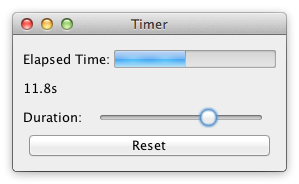

===================================================================================================================================================================
Challenge
Concurrency, competing user/signal interactions, responsiveness.
Criteria
- Build a frame containing:
- A gauge G for the elapsed time e.
- A label which shows the elapsed time as a numerical value.
- A slider S by which the duration d of the timer can be adjusted while the timer is running.
- A reset button R.
- Adjusting S must immediately reflect on d and not only when S is released.
- When e ≥ d is true then the timer stops (and G will be full). If, thereafter, d is increased such that d > e will be true then the timer restarts to tick until e ≥ d is true again.
- Clicking R will reset e to zero.
Timer deals with concurrency in the sense that a timer process that updates the elapsed time runs concurrently to the user's interactions with the GUI application. This also means that the solution to competing user and signal interactions is tested. The fact that slider adjustments must be reflected immediately moreover tests the responsiveness of the solution. A good solution will make it clear that the signal is a timer tick and, as always, has not much scaffolding.
Timer is directly inspired by the timer example in the paper Crossing State Lines: Adapting Object-Oriented Frameworks to Functional Reactive Languages.

Assumptions
- Elapsed time is displayed to the nearest 1/10 of a second.
- Duration can be adjusted by at least 1/1000 of a second (i.e. 1 millisecond).
- Initial duration is 15 seconds.
- Maximum duration is 30 seconds.
Code
After opening a code link below, hit the '.' key to open GitHub's browser editor for an improved reading experience.